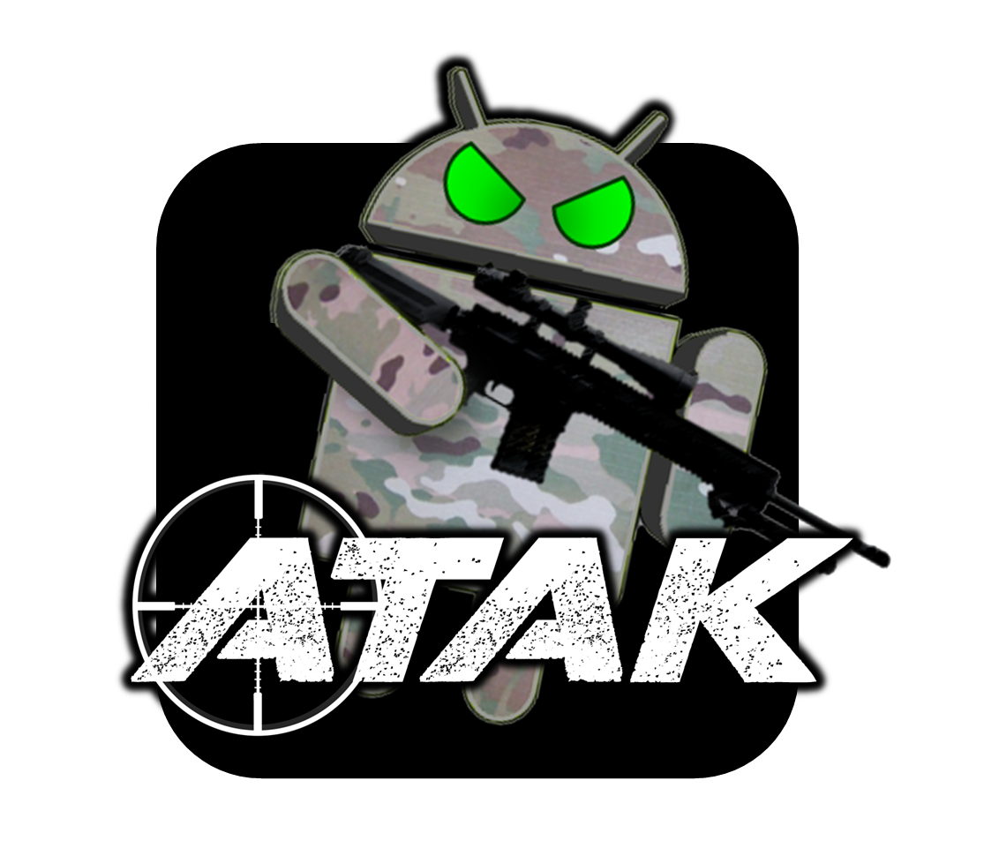
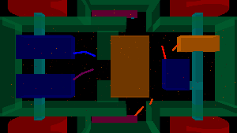
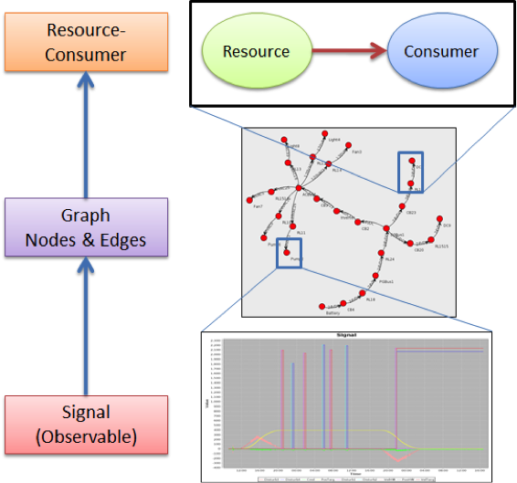
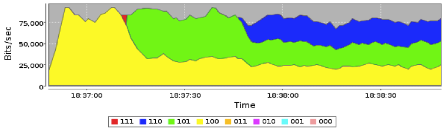
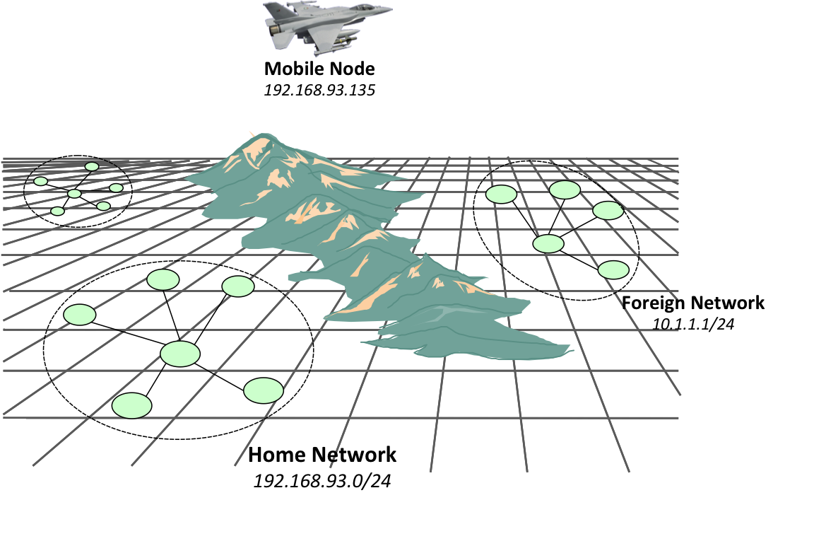

Bio
Kyle Usbeck works at Raytheon BBN Technologies as a
Scientist and Software Engineer in the distributed systems
group. There, he has contributed to projects involving
Quality of Service (QoS) over airborne networks, artificial
intelligence, and electro-mechanical system design modification.
Kyle Usbeck has a Masters of Science and Bachelors of
Science in Computer Science from Drexel University's
College of Engineering. Kyle's thesis, Network-Centric
Automated Planning and Execution, investigates a novel
method of generating, executing, and monitoring automated
plans in dynamic, heterogeneous network environments.

Kyle worked at Drakontas LLC as a Lead Software Engineer.
Drakontas is a company that specializes in communications
software for law enforcement, emergency response, and
security operations. Kyle managed a project for improving
communication between forensic scientists, was the lead
developer for rapid prototyping projects, and was a major
contributor to DragonForce® Situation Awareness
Software Suite.
Kyle conducted research in the Secure Wireless Agent
Testbed (SWAT) laboratory under the direction of Dr.
William C. Regli. Some of Kyle's research interests
include Artificial Intelligence, Automated Planning,
Multiagent Systems, Networking, HCI, and Mobile Computing.
On a personal note, Kyle enjoys writing and playing music.
He plays piano, guitar, drums, and ukulele. He enjoys
recreational baseball, basketball, soccer, frisbee, golf,
and rock climbing. Other hobbies include cooking and
watching the Flyers, Phillies, and Red Sox.
Experience
Mr. Usbeck is a Scientist / Software Engineer in the Distributed
Systems group at BBN. He is responsible for designing and building
information management systems which help to intelligently control
the movement of information throughout networks, usually over
resource-constrained, mobile devices. Mr. Usbeck has contributed to
many related systems and projects including:
Kyle is a lead developer on Marti, a tactical
beyond-line-of-sight information management system for
deployment on near-space balloons, manned and unmanned
aircraft targetting pods, and within force protection kits.

Kyle is a lead developer on ATAK, which aims to
aggregate and display situation awarness information on COTS
Android phones and tablets.

Morphogenetically Assisted Design Variation (MADV)
[Maximum Mobility and Manipulation (M3) DARPA DSO]: a
project aimed at improving a framework for the rapid design
of robotic systems using morphogenesis to adapt robot
design.

META [DARPA TTO]: a project to produce an extensible metric
evaluation framework to improve cyber-physical system design.

Quality-of-Service Enabled Dissemination (QED) [AFRL]: a project
to dynamically provide beyond line-of-sight communications to
decoupled information producers and information consumers on
tactical networks.

Integrated Information and Network Management for End-to-end QoS
(IINMEQ) / Network-Centric Exploitation and Tracking (N-CET)
[AFRL]: projects whose goals are to dynamically control quality of
service on highly-dynamic airborne networks.
Mr. Usbeck has worked on the Marti system as a software developer
since 2010. Under the MIMIR program, Mr. Usbeck improved the
existing Marti implementation (e.g., increasing throughput by two
orders of magnitude) and developed new features for Marti
including a firewall-penetrating protocol extension, an improved
workflow for annotating images via a web interface, and a
file-sharing utility. Under the Force Protection program, Mr.
Usbeck implemented several features for an Android Tactical
Assault Kit (ATAK), an Android-based situation-awareness
application. Modifications that Mr. Usbeck has made to ATAK and
Marti have made significant performance improvements, and he has
designed and performed experiments to demonstrate these
improvements. Mr. Usbeck also supports related off-site
integration and testing exercises.
Mr. Usbeck is also involved in procuring new business for BBN, and
has been a contributor on several successful business development
efforts including N-CET, SAFIM ECP, RIPR, and OpenPod. Additionally,
Usbeck co-organizes the Engineered Self-Organization
seminar series at BBN and has served on the program committee for
numerous journals and conferences.